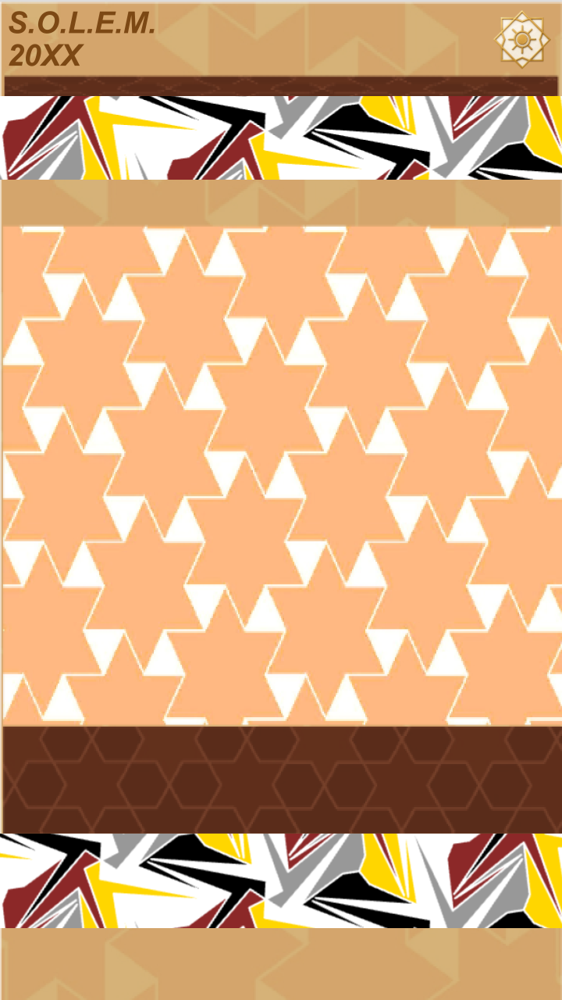

Navigation
Anchor links move through the active archive sections: status, files, dossier, images, and audio.
A civilian-facing landing page for S.O.L.E.M. archive material: dossier pages, selected graphics, and the Ghostwire audio loop. Internal, technical, and restricted materials are intentionally withheld from this layer.
One static page. Direct links. Readable archive sections. No centered text.
Anchor links move through the active archive sections: status, files, dossier, images, and audio.
Six civilian dossier pages are displayed directly as image records for quick review.
BOOT.wav and DSYNC.mp3 remain available through built-in browser audio controls.
Direct civilian-facing archive files currently placed in this folder.
Displayed as direct archive images.


Current civilian graphics and icons available as direct image assets.




Ghostwire audio access remains direct and browser-native.
Boot intro audio. Load the signal manually when ready.
Async loop audio. Civilian-facing playback only.
{kind=link}
{kind=link}